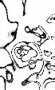

| Interphase | You wonder why things aren't simpler. You had hoped for one thing all your life, and gotten it. It was not the right thing. You would never have imagined it this way. | |
| Prophase | Prolonged, enforced silences. Planned annoyance.
Mental notes taken on each other, to be used in fueling hatred. Open declaration of rift. |
|
| Metaphase | Enumeration of faults and mistakes. The packing of belongings, dreams. Taking turns crying and consoling, or ignoring. Pronouced darkness. Dark circles extending past the face; through the skin. |
|
| Anaphase | Exhaustion. The sun, the horizon, the space. The heaviness of distance. Breathing to keep from breaking. |
|
| Telophase |  | You stand in the doorway, facing the night. You can hear her moving through the rooms behind you. |